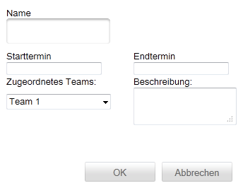
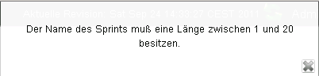
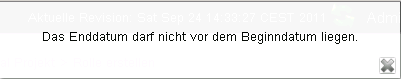

Sprint anlegen
Um einen neuen Sprint anlegen zu können, müssen Sie die folgenden Daten angeben:

Der Name des Sprints darf weder leer sein noch nur aus Leerzeichzeichen bestehen. Sollte dies dennoch der Fall sein, so zeigt die Anwendung eine entsprechende Fehlermeldung an.

Start- und Endtermin des Sprints
Indem Sie auf das Eingabefeld für das Start-/Enddatum klicken blendet Ihnen die Anwendung einen Kalender zur Auswahl des gewünschten Datums ein:

Es wird empfohlen auf die manuelle Eingabe eines Datums zu verzichten, da das Eingabeformat nicht den gängigen Datumsformaten entspricht.
Weiterhin muss darauf geachtet werden, dass das Enddatum nicht vor dem Startdatum liegt. Das System zeigt beim Verstoß dieser Bedingung eine entsprechende Fehlermeldung an.

Einem Sprint muss immer ein Team zugeordnet werden. Sollten keine Teams in der Auswahlliste angezeigt werden, so muss zunächst ein entsprechendes Team erstellt werden (siehe hier)
Die Beschreibung eines Sprints ist ein optionaler Bestandteil und muss nicht angegeben werden. Es wird dennoch empfohlen eine kurze Beschreibung zum besseren Verständnis des Sprints anzugeben.
Speichern/verwerfen
Um den Sprint zu speichern, klicken Sie auf  oder um die Eingaben zu verwerfen auf .
oder um die Eingaben zu verwerfen auf .
Created with the Personal Edition of HelpNDoc: Create iPhone web-based documentation